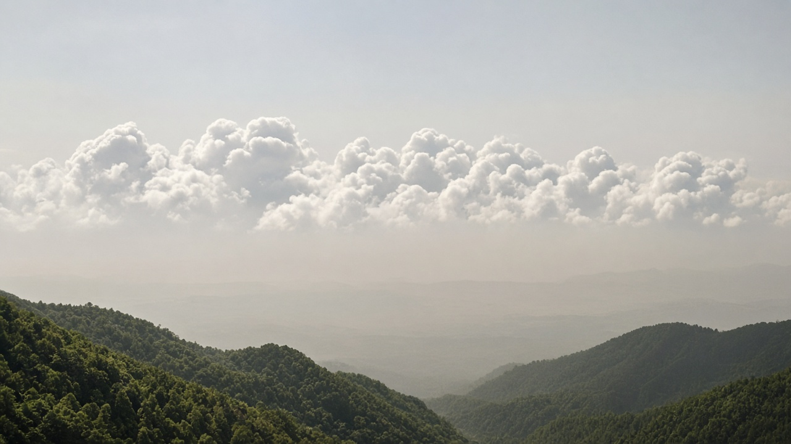
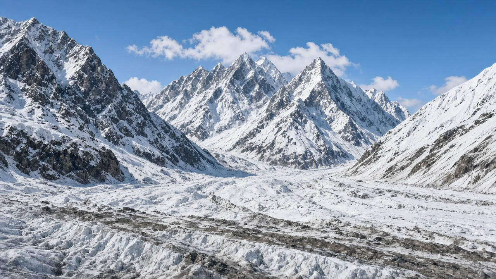
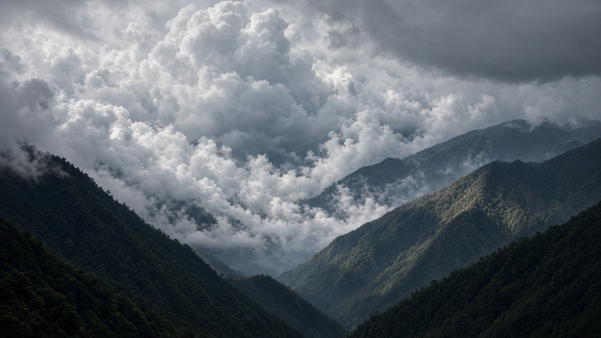

Aerosols, Clouds, and Climate Interactions
Published on August 20, 2026

Atmospheric aerosols are microscopic solid or liquid particles suspended in air, originating from natural sources such as sea salt, dust storms, volcanic eruptions, and biogenic emissions, as well as anthropogenic sources including combustion, industrial processes, and agricultural activities. Aerosols influence climate through direct radiative effects by scattering and absorbing sunlight, and through indirect effects by serving as cloud condensation nuclei and ice nuclei that alter cloud reflectivity, lifetime, and precipitation patterns. Sulfate, nitrate, black carbon, organic carbon, and mineral dust each exhibit distinct optical properties and atmospheric lifetimes ranging from days near source regions to weeks during long-range transport.
Cloud-aerosol interactions represent one of the largest uncertainties in climate modeling because small changes in particle concentration can substantially modify cloud albedo and the global energy balance. Polluted air masses often contain higher numbers of smaller cloud droplets, producing brighter clouds that reflect more solar radiation back to space, a phenomenon known as the Twomey effect. Conversely, absorbing aerosols such as black carbon can warm the atmosphere locally, suppress cloud formation, and accelerate snow and ice melt when deposited on glaciers. Over the Himalayas and other high mountain ranges, dust and pollution transport can darken snow surfaces, reducing albedo and amplifying regional warming.
Research campaigns using aircraft, ground-based लेजर रडार, satellite remote sensing, and cloud chambers continue to refine parameterizations used in Earth system models. Mitigation of aerosol pollution improves public health while also altering the balance of climate forcing, since reducing sulfur dioxide emissions decreases cooling sulfate aerosols as well as health-damaging PM2.5. Policy makers must therefore consider co-benefits and समझौताs between air quality improvements and near-term climate impacts. Integrated assessments that link emission controls, aerosol chemistry, and cloud microphysics help nations design strategies that protect both atmospheric composition and the stability of regional water resources dependent on monsoon and snowfall patterns.

वायुमण्डलीय एरोसोलहरू समुद्री लवण, धुलो आँधी, ज्वालामुखी विस्फोट, जैविक उत्सर्जन र दहन, उद्योग तथा कृषि गतिविधिबाट उत्पन्न सूक्ष्म ठोस वा तरल कणिका हुन्। एरोसोलले प्रत्यक्ष रूपमा सूर्यको प्रकाश छर्दै र अवशोषण गरेर, र अप्रत्यक्ष रूपमा बादल संघनन नाभिक र बरफ नाभिक बनेर बादलको परावर्तकता, आयु र वर्षा ढाँचामा परिवर्तन ल्याएर जलवायुमा प्रभाव पार्छ। सल्फेट, नाइट्रेट, कालो कार्बन, कार्बनिक कार्बन र खनिज धुलोका फरक-फरक प्रकाशीय गुण र दिनदेखि हप्तासम्मको वायुमण्डलीय आयु हुन्छ।
बादल-एरोसोल अन्तरक्रियाले जलवायु मोडेलिङमा सबैभन्दा ठूलो अनिश्चितता प्रतिनिधित्व गर्छ, किनभने कणिका सान्द्रतामा सानो परिवर्तनले बादलको परावर्तकता र विश्वव्यापी ऊर्जा सन्तुलनमा ठूलो प्रभाव पार्न सक्छ। प्रदूषित वायुमा साना बादल थोपाहरू धेरै हुन्छन्, जसले चम्किलो बादल बनाउँछ र बढी सूर्य विकिरण अन्तरिक्षतर्फ फर्काउँछ। कालो कार्बन जस्ता अवशोषक एरोसोलले स्थानीय वातावरण तताउँछ, बादल निर्माण दबाउँछ र हिमनदमा जम्दा हिउँ पग्लन तीव्र बनाउँछ। हिमालयमा धुलो र प्रदूषणले हिउँ अँध्यारो बनाउँछ, परावर्तकता घटाउँछ र क्षेत्रीय तापन बढाउँछ।
विमान, भुइँमुखी लेजर रडार, उपग्रह र बादल कक्ष प्रयोग गरेर अनुसन्धानले पृथ्वी प्रणाली मोडेलका पैरामिटर निर्धारण सुधार गर्छ। एरोसोल प्रदूषन न्यूनीकरणले जनस्वास्थ्य सुधार्छ तर जलवायु बलको सन्तुलन पनि बदल्छ, किनभने सल्फर डाइअक्साइड घटाउँदा PM2.5 सँगै शीतलन सल्फेट एरोसोल पनि घट्छ। नीति निर्माताले वायु गुणस्तर र नजिकको जलवायु प्रभावबीचको समझौता विचार गर्नुपर्छ। उत्सर्जन नियन्त्रण, एरोसोल रसायन र बादल सूक्ष्मभौतिकी एकीकृत मूल्याङ्कनले मनसुन र हिमपातमा निर्भर क्षेत्रीय जल स्रोत संरक्षणमा मद्दत गर्छ।

वायुमंडलीय एरोसोल समुद्री लवण, धूल तूफान, ज्वालामुखी विस्फोट, जैविक उत्सर्जन और दहन, उद्योग तथा कृषि गतिविधियों से उत्पन्न सूक्ष्म ठोस या तरल कण हैं। एरोसोल प्रत्यक्ष रूप से सूर्य का प्रकाश बिखेरकर और अवशोषित करके, तथा अप्रत्यक्ष रूप से बादल संघनन नाभिक और बर्फ नाभिक बनकर बादल की परावर्तकता, आयु और वर्षा पैटर्न बदलकर जलवायु को प्रभावित करते हैं। सल्फेट, नाइट्रेट, काला कार्बन, कार्बनिक कार्बन और खनिज धूल के अलग-अलग प्रकाशीय गुण और दिनों से सप्ताह तक की वायुमंडलीय आयु होती है।
बादल-एरोसोल अंतःक्रिया जलवायु मॉडलिंग में सबसे बड़ी अनिश्चितता है, क्योंकि कण सांद्रता में छोटा बदलाव बादल की परावर्तकता और वैश्विक ऊर्जा संतुलन को काफी बदल सकता है। प्रदूषित वायु में छोटी बादल बूंदें अधिक होती हैं, जो चमकीले बादल बनाती हैं और अधिक सौर विकिरण अंतरिक्ष की ओर लौटाती हैं। काले कार्बन जैसे अवशोषक एरोसोल स्थानीय वातावरण को गर्म करते, बादल निर्माण दबाते और ग्लेशियर पर जमने पर हिमपात पिघलाना तेज करते हैं। हिमालय में धूल और प्रदूषण बर्फ को गहरा कर परावर्तकता घटाते और क्षेत्रीय तापन बढ़ाते हैं।
विमान, भू-आधारित लेजर रडार, उपग्रह और बादल कक्ष से अनुसंधान पृथ्वी प्रणाली मॉडल के पैरामिटर निर्धारण सुधारते हैं। एरोसोल प्रदूषन घटाने से जन स्वास्थ्य सुधरता है पर जलवायु बल का संतुलन भी बदलता है, क्योंकि सल्फर डाइऑक्साइड घटाने से PM2.5 के साथ शीतलन सल्फेट एरोसोल भी घटते हैं। नीति निर्माताओं को वायु गुणवत्ता और निकटकालीन जलवायु प्रभाव के बीच समझौता पर विचार करना चाहिए। उत्सर्जन नियंत्रण, एरोसोल रसायन और बादल सूक्ष्मभौतिकी का एकीकृत मूल्यांकन मानसून और हिमपात पर निर्भर क्षेत्रीय जल संसाधनों की रक्षा में मदद करता है।